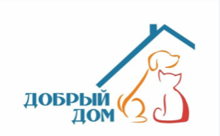
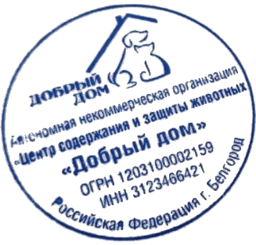

от 25.09.2026
УФСИН России по Тамбовской области
полковнику внутренней службы
П. В. Астафьеву
Тамбовская область,
Сосновский район, пос. Рабочий
О возможности проживания
На Ваш запрос от 25.09.2026 № исх-70/ТО/43/14-6387, направленный в соответствии с пунктом 2 части 2 статьи 17 Федерального закона от 06.02.2023 № 10-ФЗ «О пробации в Российской Федерации», о возможности проживания Костикова Андрея Валерьевича, 1980 года рождения, по адресу: Белгородская область, Белгородский район, с. Новая Нелидовка, ул. Луговая, д. 2, корп. А, сообщаю следующее.
Автономная некоммерческая организация «Центр содержания и защиты животных «Добрый дом» является приютом для собак. На территории организации жилые помещения отсутствуют. Расположены только административно-хозяйственные корпуса и вольеры для содержания собак. Указанный адрес для проживания граждан не предназначен.
Проживание Костикова Андрея Валерьевича, 1980 года рождения, по адресу: Белгородская область, Белгородский район, с. Новая Нелидовка, ул. Луговая, д. 2, корп. А, невозможно.
